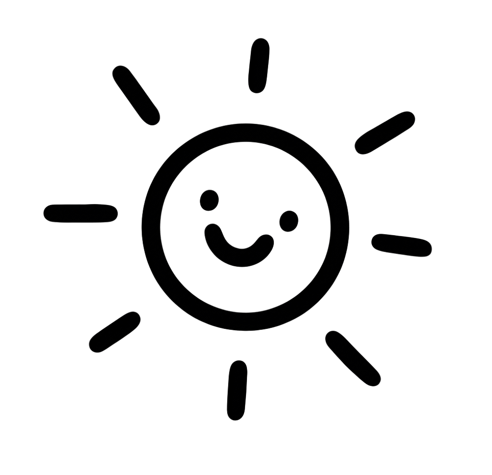
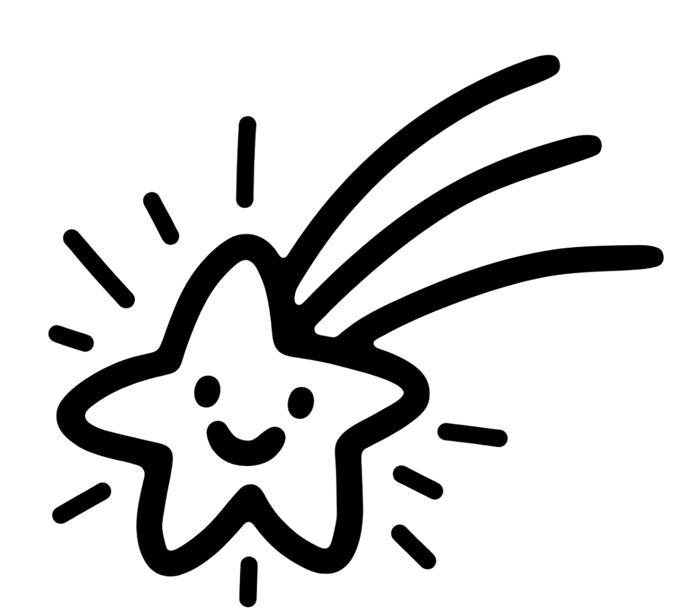
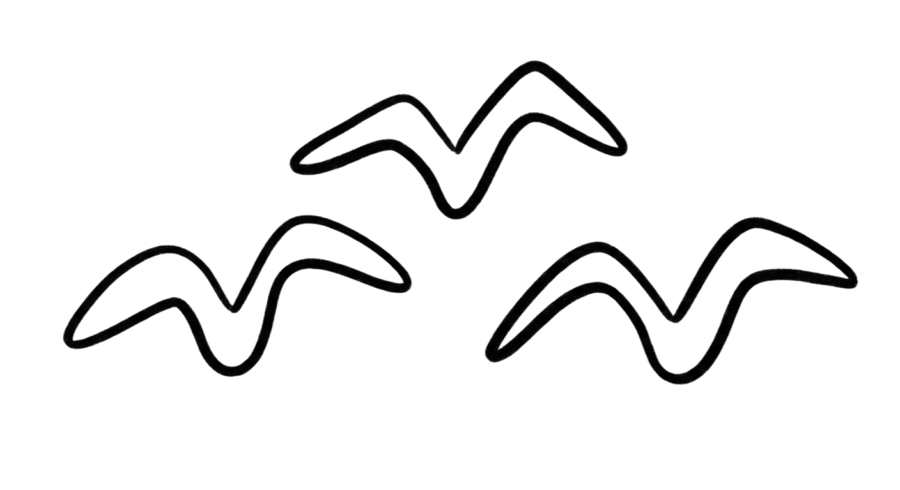
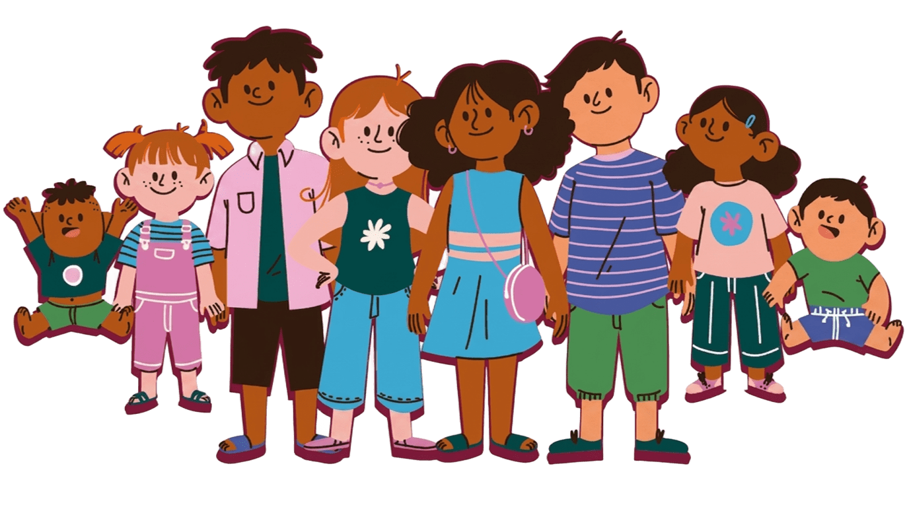
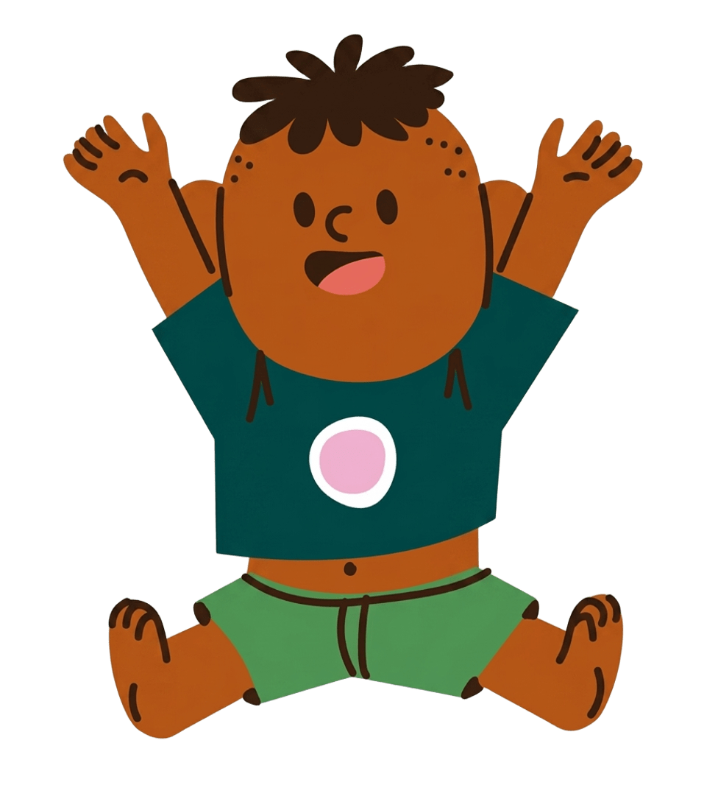
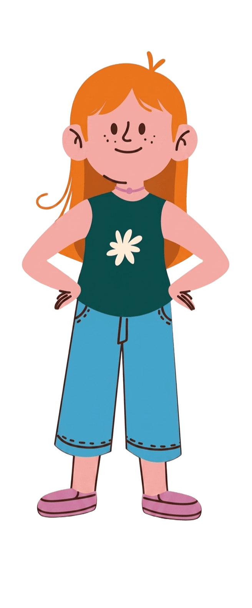
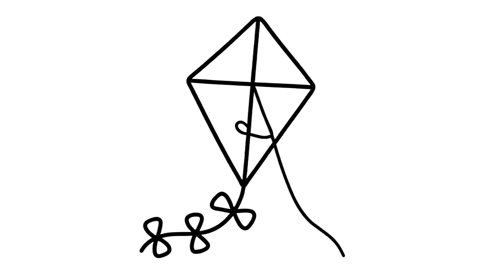
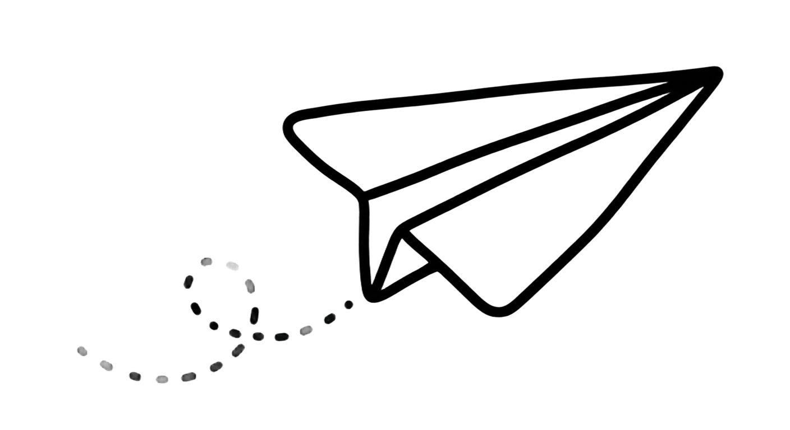

SIPINNA cuida y protege a todas las niñas, niños y adolescentes de Veracruz. ¡Conoce tus 20 derechos entre las nubes!


Es el Sistema de Protección Integral de Niñas, Niños y Adolescentes que funge como autoridad de primer contacto y canalización con las instancias de protección y restitución de derechos. Coordina acciones entre instituciones, familias y comunidades para garantizar los derechos de la niñez y la adolescencia.
Garantizar el pleno ejercicio, respeto, protección y promoción de los derechos humanos de niñas, niños y adolescentes.
Pláticas en escuelas dirigidas a niños, padres de familia, personal docente y administrativo, servidores públicos y sociedad en general.
Reportes de posibles vulneraciones de derechos, presenciales o telefónicos, pudiendo ser anónimos.
Atención gratuita, con el propósito de garantizar el ejercicio de sus derechos: médica, psicológica, asesoría legal, etc. solicitada por su madre, padre o tutor.
¡Desliza hacia abajo!


Derecho a la vida, a la supervivencia y al desarrollo
Derecho a la prioridad
Derecho a la identidad
Derecho a vivir en familia
Derecho a la igualdad sustantiva
Derecho a no ser discriminado
Derecho a vivir en condiciones de bienestar y a un sano desarrollo integral
Derecho de acceso a una vida libre de violencia y a la integridad personal
Derecho a la protección de la salud y a la seguridad social
Derecho a la inclusión de niñas, niños y adolescentes con discapacidad
Derecho a la educación
Derecho al descanso y el esparcimiento
Derecho de la libertad de convicciones éticas, pensamiento, conciencia, religión y cultura
Derecho a la libertad de expresión y acceso a la información
Derecho a la participación
Derecho de asociación y reunión
Derecho a la intimidad
Derecho a la seguridad jurídica y al debido proceso
Derecho de niñas, niños y adolescentes migrantes
Derecho de acceso a las tecnologías de la información y comunicación
Cuidar, proteger y garantizar derechos es una tarea compartida. Las niñas, niños y adolescentes enfrentan mayores riesgos durante situaciones de violencia, crisis, emergencias o desastres; un Entorno Protector ayuda a prevenir la violencia, reducir riesgos, cuidar la salud emocional, garantizar derechos y favorecer su desarrollo integral.
Donde las personas adultas cuidan, escuchan, acompañan y protegen a niñas, niños y adolescentes.
Se construyen desde distintos espacios
Cuidar a la niñez es una responsabilidad compartida. Desde casa, la escuela, las instituciones y la comunidad, ¡todas y todos podemos ser parte de un Entorno Protector! 💛

Lic. Juan Genaro Rebolledo Montes — Secretario Ejecutivo del Sistema Municipal de Protección Integral de Niñas, Niños y Adolescentes (SIPINNA)
229 961 0106 / 229 961 0107
Av. Ignacio Bustamante esq. Matamoros (instalaciones del DIF) Ver mapa
Lunes a Viernes, 8:00 a 15:00 hrs. Guardia de 15:00 a 20:00 hrs.